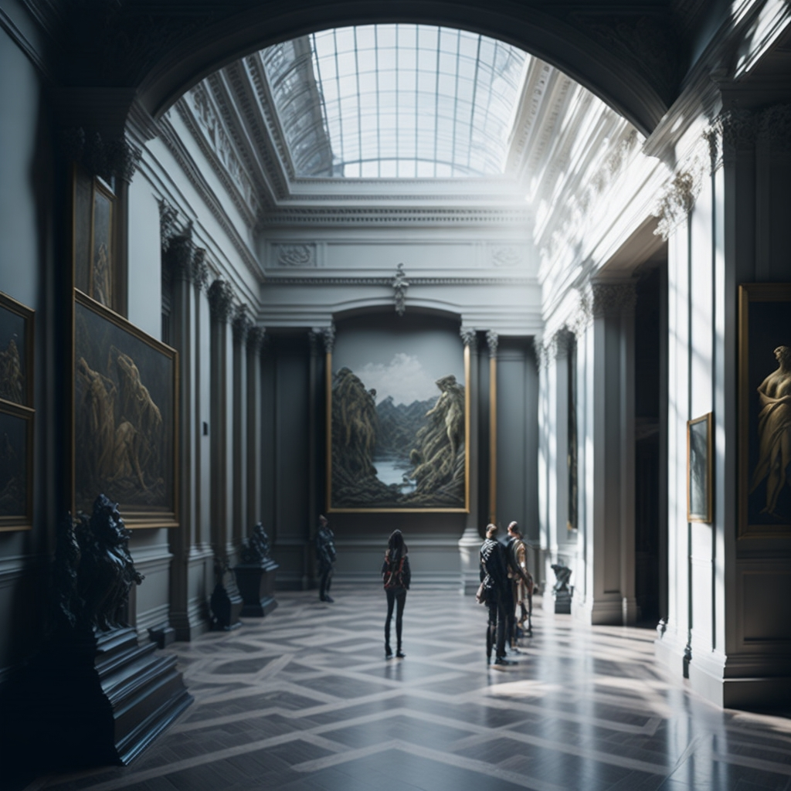
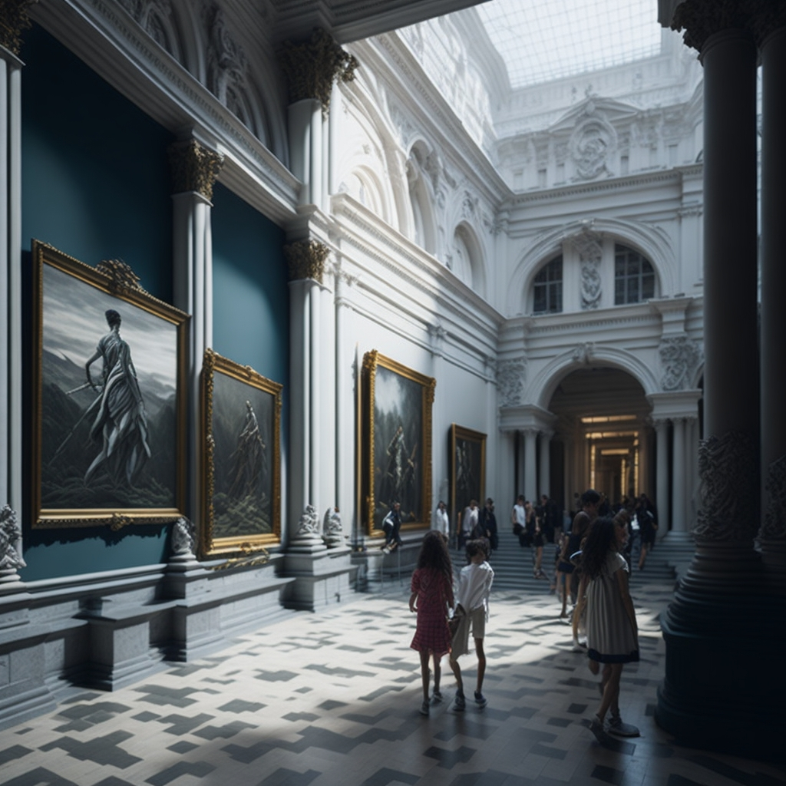

|  |
No dia 18 de maio, celebre o Dia Internacional dos Museus e, no dia 13, participe na Noite Europeia dos Museus. Em 2023, este dia especial tem como tema “Museus, Sustentabilidade e Bem-Estar”, convidando os museus e os seus visitantes a refletir sobre como podem para o bem-estar e para o desenvolvimento sustentável das comunidades. O Dia Internacional dos Museus tem vindo a apoiar os Objetivos de Desenvolvimento Sustentável das Nações Unidas dos Museus, desde 2020, entre os quais se decidiu destacar, para este ano, a Saúde e o Bem-Estar Globais, a Ação Climática e a Vida na Terra. Pretende-se chamar a atenção para a importância de manter uma vida saudável em todas as idades, particularmente no que se refere à saúde mental e ao isolamento social; de tomar medidas urgentes para combater as mudanças climáticas e os seus impactos; e de proteger, restaurar e promover o uso sustentável dos ecossistemas terrestres, para evitar a perda da biodiversidade. |
|
O Dia Internacional dos Museus, celebrado anualmente a 18 de maio, foi organizado pela primeira vez em 1977 pelo ICOM – Conselho Internacional de Museus, com o objetivo de sensibilizar a sociedade civil para o facto de “os museus serem um importante meio de intercâmbio cultural, enriquecimento das culturas, desenvolvimento da compreensão mútua, cooperação e paz entre os povos”. |
 |